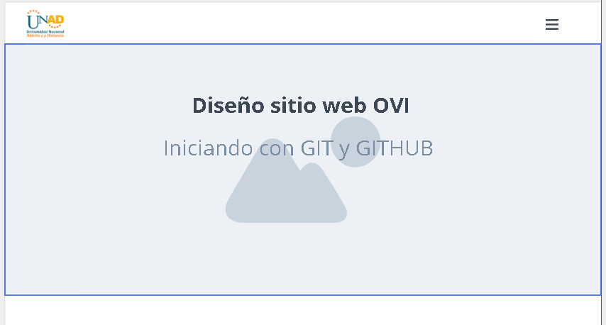
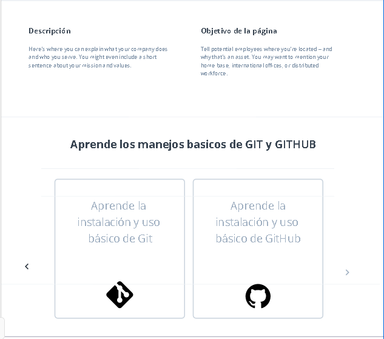
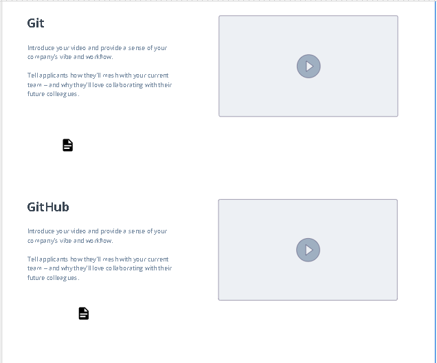

contenido de Git
GIT :Un sistema de control de verciones es un programa que nos
permite almacenar tolos los cambios que hagamos a uno o varios
archivos, de esta forma podemos tener un registro de todas las
modificaciones que sufran estos archivos y asi en caso de algun error
poder regresar a una version anterior.
Instalando git
1•Para instalar git lo primero que debemos hacer es ir a la pagina.
2•Una ves descargado ejecutamos el instalador, este nos pedira
permisos de administrador.
3• a continuacion nos preguntara con que linea de comandos
queremos manejar git, podemos elegir GIT bash, el CMD de Windows
y GIT bash con algunas caracteristicas de CMD de Window
4•Finalmente nos aparece la opcion install, damos clic en esta y
esperamos a que termine de instalar GIT en nuestro equipo Una ves terminada
la instalacion nos dara la opcion de ejecutar GIT bash y de ver las notas de
la version, damos clic en finalizar y habremos terminado.
contenido de GitHub
GITHUB es una plataforma de desarrollo colaborativo de software para alojar
proyectos usando el sistema de control de versiones Git. Github nos permite
alojar nuestro repositorio de codigo y nos brinda herramientas utiles para
el trabajo colaborativo.
contenido de CSS
Son hojas en estilo de cascadas, se crearon para separar el contenido de la forma,
es decir, el aspecto y formato de un documento de la información que contiene.
Ventajas
1• el lenguaje Css ofrece una amplica gama de herramientas de composición mas potentes que HTML
2• Las hojas de estilo pueden usarse con otros lenguajes de programación para conseguir efectos
dinámicos en las páginas
Desventanas
1•Algunas propiedades de la CSS pueden provocar que una parte del contenido de nuestra pagina
resulte inaccesible desde algunos navegadores.
CSS3
sirve para definir la estética de un sitio web en un documento externo y eso mismo
permite que modificando ese documento (la hoja CSS) podamos cambiar la estética entera
de un sitio web, el mismo sitio web puede variar totalmente de estética cambiando solo
la CSS, sin tocar para nada los documentos HTML o jsp o asp que lo componen.
Características principales
1. Atributo gradiente de colores en borde con CSS y Firefox: Posibilidad de definir el
un gradiente de color en el borde de los elementos con CSS, en un atributo no estándar de Firefox.
2. Bordes redondeados en CSS 3: Las características de CSS 3 incluyen bordes redondeados,
a través del atributo border-radius, que define la curvatura que debe tener el borde del elemento.
3. Múltiples imágenes de fondo con CSS: Cómo conseguir que un elemento de la página tenga
varias imágenes de fondo a la vez, con CSS básico y con características de CSS 3.
4. Colores RGBA en CSS 3: Veremos qué son
Aplicaciones o usos de css3
1. Botones y HTML: Mostramos algunas insuficiencias del HTML en el diseño de formularios
y en concreto en el retoque de botones de envío de formularios.
2. Botones y CSS: Explicamos las mejoras que pueden obtenerse por el uso de hojas
de estilo en la creación de formularios y, más concretamente, los botones de envío.
3. Botones e imágenes: Como podemos mejorar los botones con el uso de imágenes en lugar
de botones de submit corrientes.
4. Botones, CSS y tablas: Vamos a mejorar los botones normales, que al hacer click
hacen efecto de pulsación, con imágenes a los lados para mejorar su aspecto.
5. Botones, imágenes y eventos: Para que los botones de imagen no ignoren los eventos
de teclado, vamos a utilizar una función Javascript.
6. Botones, tablas y eventos: Ampliamos el ejemplo anterior para que el texto de los
botones se pueda editar fácilmente, sin perder en presentación.
contenido de HTML
HTML es un lenguaje formado por elementos, un elemento se ve como todo el texto
que se muestra en la Imagen 3, los elementos nos ayudan a estructurar y dar significado
a las partes de un documento HTML, estos elementos a su vez están conformados
por contenido, etiquetas y atributos.
Las etiquetas nos sirven para delimitar el inicio y el fin de un elemento,
como en el ejemplo, vemos un elemento que utiliza la etiqueta de apertura
para indicar el inicio de un párrafo, y la etiqueta de cierre para indicar el fin de un párrafo.
Mockup



PROGRMA: INGENIERÍA DE SISTEMA
FECHA DE CREACIÓN: 04/10/2020
DATOS DE COTACTO: Andreariosdiaz1201@gmail.com
Página web